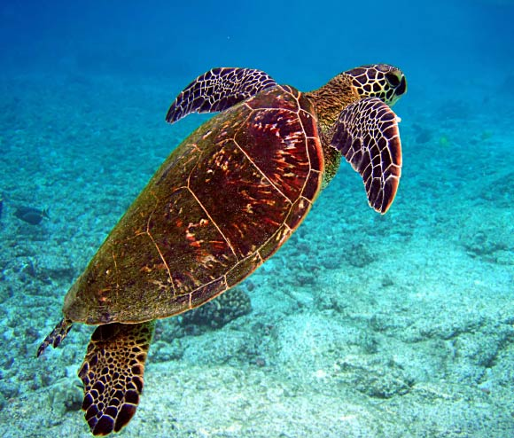

<!DOCTYPE html>
<html>
<head>
<meta name="viwe point" ::content="with=device-width,initical-scale=1.0">
<title>TURTLES OF SRI LANKA</title>
<link rel="stylesheet" href="./style.css">
</head>
</html>
<body>
    <div class="div-bg">
        <nav>
            <div class="nav-links" id="test">
               <ul>
                   <li><a href="#">HOME</a></li>
                   <li><a href="./secondpage.html">CATEGORIES</a></li>
                   <li><a href="./thirdpage.html">THREAT</a></li>
                   <li><a href="./fourthpage.html">HIKKADUWA HATCHERY</a></li>
                   <li><a href="./contact.html">OTHER HATCHERIES</a></li>
                   <li><a href="./PURCHASE AND DONATIONS.html">PURCHASE AND DONATIONS</a></li>
               </ul>
            </div>
       </nav> 
<div class="text-box">
    <h2>Turtle Hatcheries in Sri Lanka</h2>
    <p>
        Koggala Turtle Hatchery is located in Koggala, a small coastal 
        town situated on the south coast of Sri Lanka. The easiest way to reach Koggala is from the nearby tourist town of Unawatuna, 
        just 8km away.
        <br> 
        We recommend renting a scooter and exploring the South coast of <a href="#">Sri Lanka</a>.
    </p>
   <a href="https://goo.gl/maps/VAS5avq6shZwxNji7" class="my-btn">Visit Us</a>
    </div>
</div>
   
<!--------TURTLES IN SRI LANKA-------->

  <section class="TURTLES IN SRI LANAKA">
    <h2>TURTLES IN SRI LANAK</h2>
    <p>There are three species of freshwater turtles and one terrestrial tortoise in Sri Lanka. The freshwater turtles are Parker's Black Turtle (Melanochelys trijuga pakeri) Sri Lanka Black Turtle (Melanochelys trijuga thermalis) and the Soft or Flapshell turtle (Lissemys punctata punctata).</p>

    <div class="row">
    <div class="turtle-col">
    <h3>TURTLES</h3>
    <P>Sea turtles, sometimes called marine turtles, are reptiles of the order Testudines and of the suborder Cryptodira. The seven existing species of sea turtles are the flatback, green, hawksbill, leatherback, loggerhead, Kemp's ridley, and olive ridley sea turtles.</P>

    
    <div class="turtle-col">
    <h3>LOCATION</h3>
    <P>So where can you see turtles in Sri Lanka? The answer is pretty much anywhere along the coastline, however, Hikkaduwa, Mirissa, and Trincomalee are three of the top spots for not only spotting but swimming with the turtles too!</P>
    
    <div class="turtle-col">
    <h3>SEASONS</h3>
    <P>A common breeding ground for green and hawksbill turtles, you can also see loggerhead, leatherback, flatback, and olive ridley turtles roaming the waters. Best time: Turtles can be seen all year round. However, late October to early December is a particularly good time to see sea turtles.</P>

    </div>
    </div>
    </div>
    </div>
    <div class="row">
    <div class="they-col">
        
        <div class="layer">
        <h3>CORALS AND TURTLES</h3>      
        </div>
    </div>
    <div class="they-col">
         
         <div class="layer">
         <h3>TURTLES AND FREE WORLD </h3>      
         </div>
       </div>
       <div class="they-col">
        
        <div class="layer">
            <h3>HEALTHY TURTLES</h3>
        
        </div>
       </div>
       </div>
  
  <!---WHY THEY MATTER--->

  <section class="WHY THEY MATTER">
    <h1>WHY THEY MATTER</h1>
    <p><h3>Sea turtles are a fundamental link in marine ecosystems. They help maintain the health of seagrass beds and coral reefs that benefit commercially valuable species such as shrimp, lobster, and tuna. Sea turtles are the live representatives of a group of reptiles that have existed on Earth and traveled our seas for the last 100 million years. Turtles have major cultural significance and tourism value. Five of the seven species are found around the world, mainly in tropical and subtropical waters. The remaining two species, though, have relatively restricted ranges: Kemp's ridley is found mainly in the Gulf of Mexico and the flatback turtle around northern Australia and southern Papua New Guinea.</h3></p>

    <div class="row">
        <div class="our-col">
            
            <h3>Hatching and Careing</h3>
            <p>Sea turtles hatch throughout the year but mostly in summer.
                Hatchlings use a carbuncle (temporary egg tooth) to help break open the shell.
                After hatching, the young turtles may take 3 to 7 days to dig their way to the surface.
                Hatchlings usually wait until night to emerge from the nest. </p>

        </div>
        <div class="our-col">
            
            <h3>Giving medication to turtles</h3>
            <p>In chelonians (turtles, tortoises), the skin folds around the front legs work well. Fill the syringe with medication. Hold the syringe with the bevel of the needle pointing up. Holding the syringe at a 45-degree angle, gently insert the needle through the skin, going between any scales.</p>
        </div>
        <div class="our-col">
            
            <h3>Hatchling Releases</h3>
            <p>Hatchling releases typically occur from mid-June through August. Most releases that are open to the public take place at 6:45 a.m. on Hikkaduwa Beach in front of the Visitor Center at turtle Island National Seashore on North turtle Island in Hikkaduwa.</p>
        </div>
    </div>
  </section>

  <!---Call to Action--->

  <div clas="you-col">
    <h1>To see our turtles<br>Anywhere from the world</h1>
    <a href="#" class="my-btn">CONTACT US</a>
  </div>
  <br>
  <br>
  <!--Footer-->
  <div class="footer">
    <h4>About us</h4>
    <p>It is the mission of Sea Turtle Conservancy to ensure the survival of sea turtles within the sea of Sri Lanak, Indian through research, education, training, advocacy and protection of the natural habitats upon which they depend.</p>
   
</div>
</div>

</body>
</html>
<div class="wrapper">
    <div class="button">
       <div class="icon">
          <i class="fab fa-facebook-f"></i>
       </div>
       <span>Facebook</span>
    </div>
    <div class="button">
       <div class="icon">
          <i class="fab fa-twitter"></i>
       </div>
       <span>Twitter</span>
    </div>
    <div class="button">
       <div class="icon">
          <i class="fab fa-instagram"></i>
       </div>
       <span>Instagram</span>
    </div>
    <div class="button">
       <div class="icon">
          <i class="fab fa-linkedin"></i>
       </div>
       <span>linkedin</span>
    </div>
    <div class="button">
       <div class="icon">
          <i class="fab fa-youtube"></i>
       </div>
       <span>YouTube</span>
    </div>
 </div>
